Empire Stone × Empire Granite — QA
Test Cases: E2E Flow — Mode 2 (Ready-Made Slab)
เรื่องราวต่อเนื่องกันตั้งแต่ต้นจนจบ ไม่ใช่การเทสฟีเจอร์แยกส่วน และไม่มีข้อไหนเป็นการดักฟิลด์บังคับ/error ทั่วไป (ยกเว้น Scan Verification และบัญชีที่ตัด Block ใหม่ ซึ่งเป็น gate/พฤติกรรมจริงของกระบวนการ) — เดินตามได้เองแม้ไม่ใช่ technical user ครอบคลุมทั้ง 3 เส้นทางย่อยของโหมด 2: ขายทีละแผ่นตามเลข Serial (มีสต็อกอยู่แล้ว), ขายบางส่วนจากล็อต, และตัดใหม่จาก Block เมื่อยังไม่มีสต็อก (E5) รันจริงบน mbx-ee-dev 16 & 20 ก.ย. 2026 ตัวเลข "ตัวอย่างจริง" ทุกตัวมาจากการรันจริง ไม่ใช่ตัวเลขสมมติ
24Test Case ทั้งหมด
5หมวด
16High Priority
8Medium Priority
0Low Priority
E1. ขาย (Sale — Mode 2, Serial per-slab)
ADR-002/006/009 — เลือกทีละแผ่นตามเลข Serial · 3 test cases
| TC ID | Scenario | Precondition | Steps | ข้อมูลตัวอย่าง | Expected Result | Priority | หน้าจอจริง |
|---|---|---|---|---|---|---|---|
| TC-E2E-M2-01 | เพิ่มบรรทัดสินค้า Material โหมด Serial ใน Sale Order | มีแผ่นหินสถานะ Available อยู่แล้ว จาก Material ที่ตั้ง Pricing Mode = Serial (per-slab) |
|
ลูกค้า = "ทดสอบ E2E - Test Customer" สินค้า = E2E Mode2 Serial Fresh V2 - Slab |
เพิ่มบรรทัดสำเร็จ ปุ่ม "Select Slabs" ปรากฏบนบรรทัดนั้น (ไม่ใช่ "Select Lot Stock") | Medium | 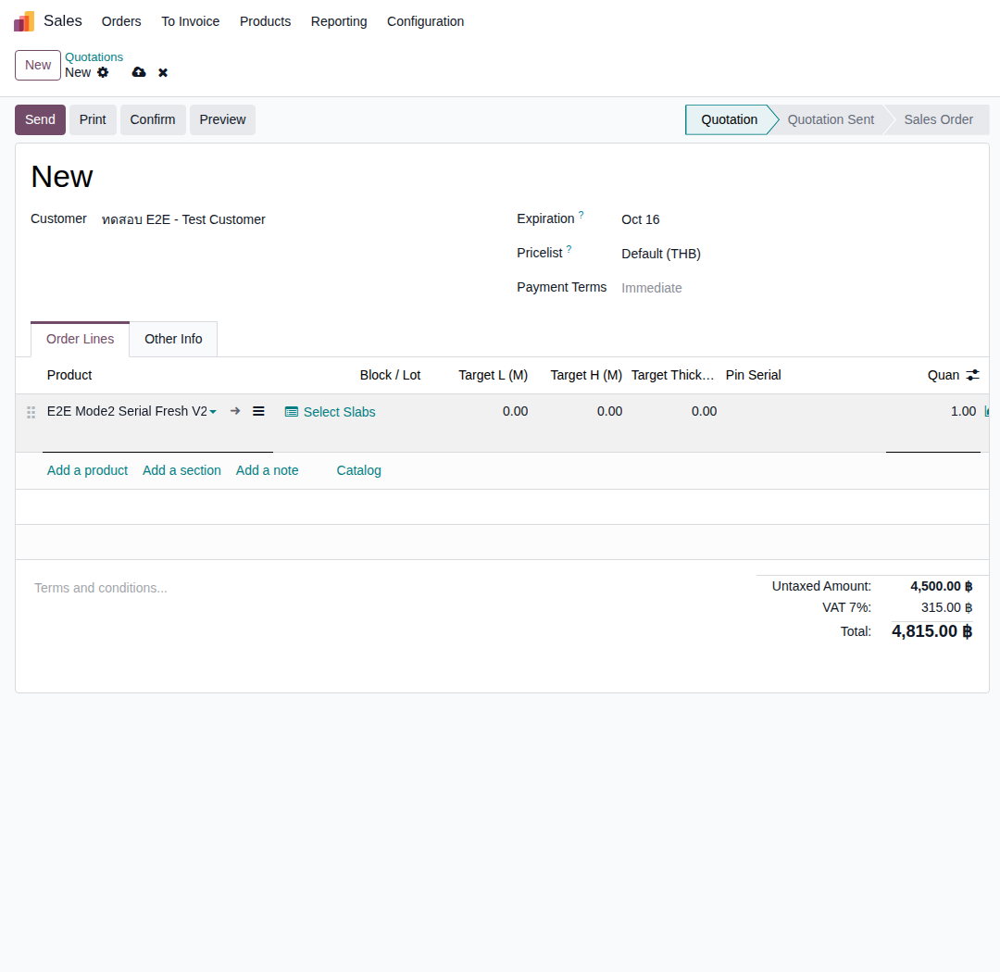 |
| TC-E2E-M2-02 | กด "Select Slabs" เลือกแผ่นตามเลข Serial | ทำ TC-E2E-M2-01 เสร็จแล้ว |
|
เลือกแผ่น = BLK-26-0034 #1 (BLK-26-0034-1) | บรรทัด SO ผูกแผ่นที่เลือก จำนวน/ราคาต่อหน่วยเติมอัตโนมัติจากขนาด+ราคาจริงของแผ่น (ตัวอย่างจริง: 0.96 ตร.ม. × 4,500/ตร.ม. = 4,320) | High | 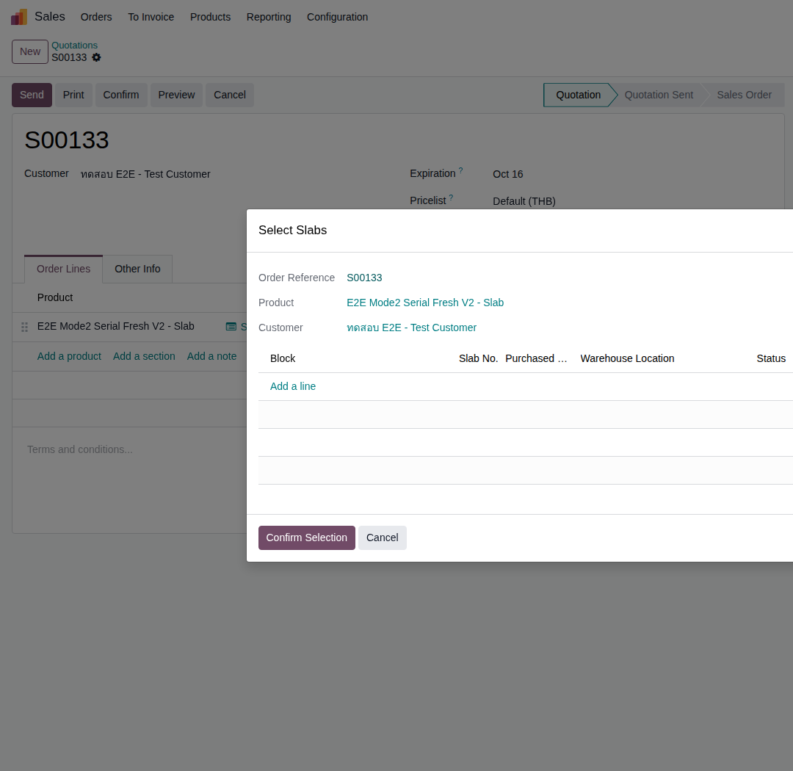 |
| TC-E2E-M2-03 | เช็ค Analytic Distribution แล้วยืนยัน (Confirm) Sale Order | ทำ TC-E2E-M2-02 เสร็จแล้ว |
|
- | ช่อง Analytic Distribution ต้องมีค่าติดมาอัตโนมัติแล้วตั้งแต่ก่อน Confirm (Material + Block + หมวดวัสดุ รวม 3 มิติ) — SO เปลี่ยนสถานะเป็น Sales Order มี Delivery Order เกิดขึ้นอัตโนมัติ 1 ใบ (ตัวอย่างจริง: S00133 → EG01/OUT/00087) | High | 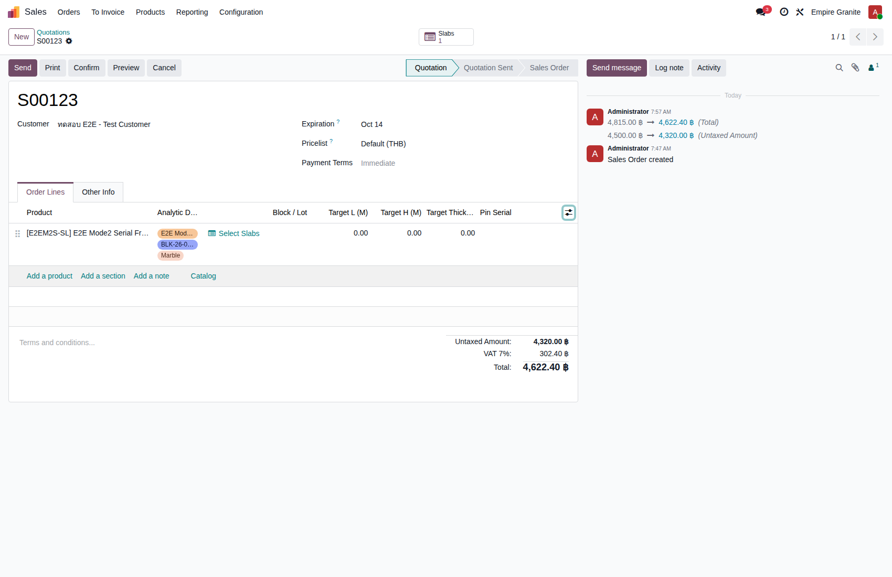 |
E2. ขาย (Sale — Mode 2, Lot aggregate)
ADR-020 — ระบุจำนวนตร.ม.บางส่วนจากล็อต ไม่ต้องขายทั้งล็อต · 3 test cases
| TC ID | Scenario | Precondition | Steps | ข้อมูลตัวอย่าง | Expected Result | Priority | หน้าจอจริง |
|---|---|---|---|---|---|---|---|
| TC-E2E-M2-04 | เพิ่มบรรทัดสินค้า Material โหมด Lot ใน Sale Order | มีล็อตหินสถานะ Available อยู่แล้ว จาก Material ที่ตั้ง Pricing Mode = Lot (aggregate) |
|
สินค้า = E2E Mode2 Lot Fresh V2 - Slab (Material โหมด Lot) | เพิ่มบรรทัดสำเร็จ ปุ่ม "Select Lot Stock" ปรากฏบนบรรทัดนั้นแทนที่จะเป็น "Select Slabs" | Medium | 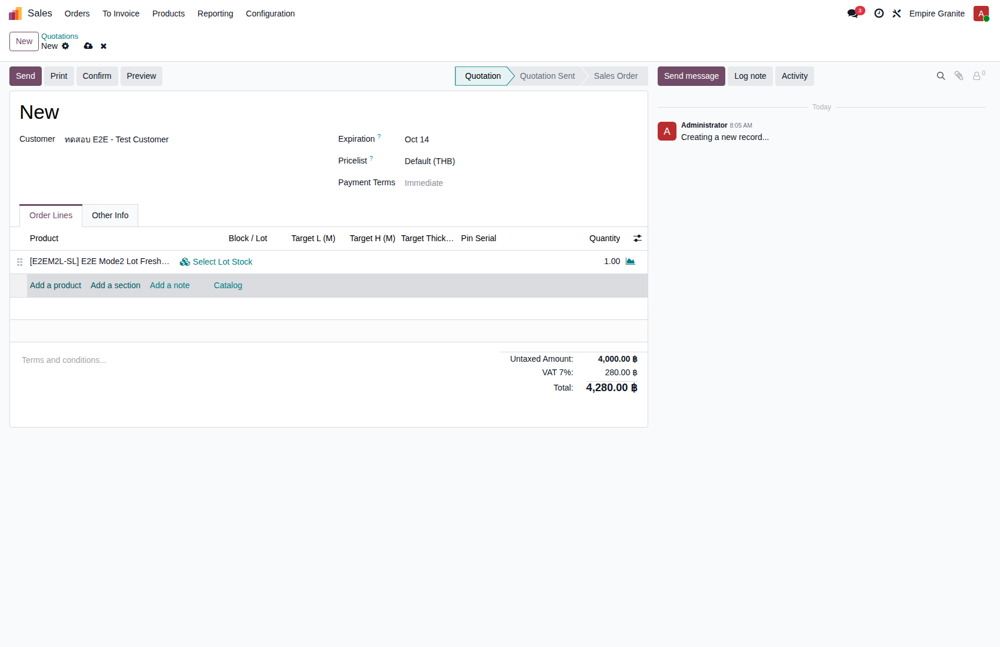 |
| TC-E2E-M2-05 | กด "Select Lot Stock" ระบุจำนวนตร.ม.บางส่วนจากล็อต ✅ ยืนยันซ้ำ (2026-09-16): บั๊กเดิม (lot ที่ตัดใหม่ไม่ผูกกับ material_lot_id ของ bundle ทำให้ขายผ่านปุ่มนี้ไม่ได้) ยังคงปิดอยู่จริง — ครั้งนี้ตัดสต๊อกใหม่ 5 แผ่น (5.00 ตร.ม.) ผ่านกลไก MO เดียวกับ Mode 3 แล้วรวมเป็นล็อตเดียวถูกต้องอัตโนมัติทันที ไม่ต้องแก้โค้ดเพิ่ม |
ทำ TC-E2E-M2-04 เสร็จแล้ว |
|
Lot = BLK-26-0035 (เหลือ 5.00 ตร.ม. เต็มล็อต) Quantity to Sell (Sq.Mt.) = 2.00 |
บรรทัด SO ผูก Lot ถูกต้อง จำนวน/ราคารวมปรับตาม 2.00 ตร.ม. ที่เลือกทันที (ตัวอย่างจริง: 2.00 × 4,000/ตร.ม. = 8,000) ไม่มีการเลือกแผ่นเดี่ยวใดๆ | High | 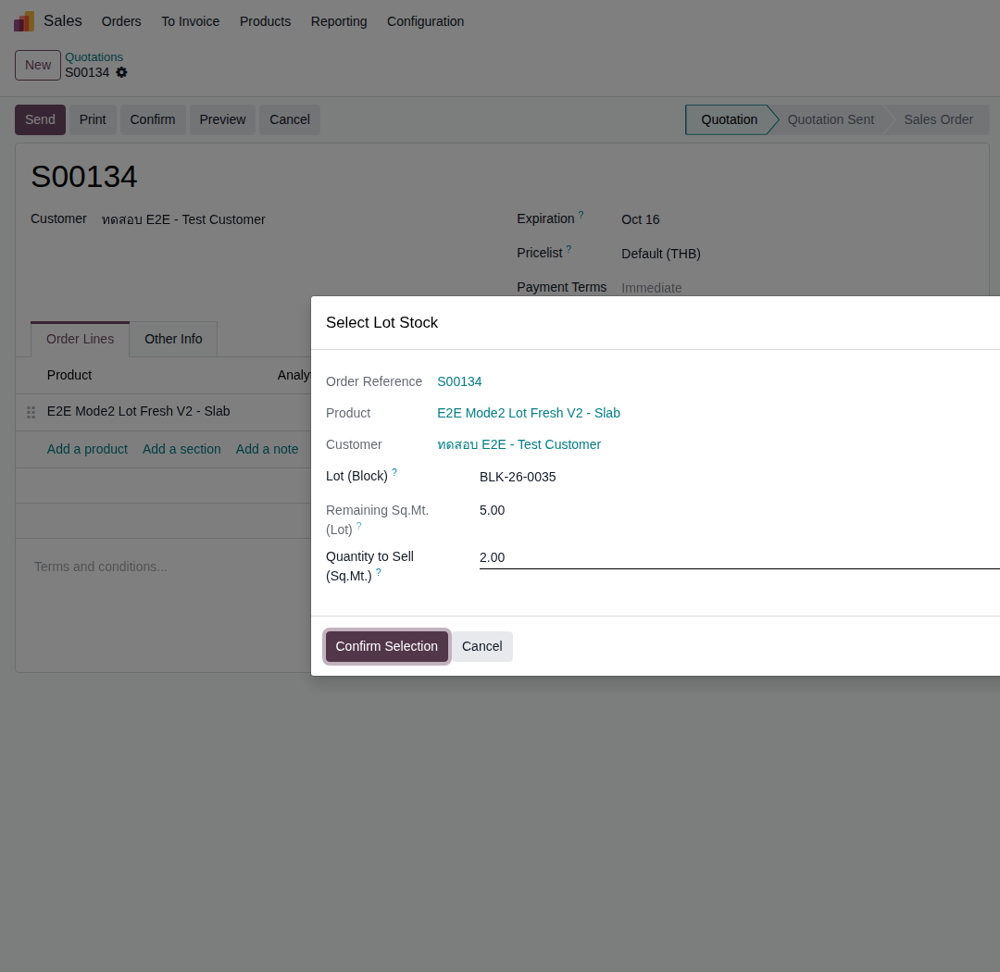 |
| TC-E2E-M2-06 | เช็ค Analytic Distribution แล้วยืนยัน (Confirm) Sale Order โหมด Lot | ทำ TC-E2E-M2-05 เสร็จแล้ว |
|
- | ช่อง Analytic Distribution มีค่าติดมาอัตโนมัติเหมือนโหมด Serial — SO เปลี่ยนสถานะเป็น Sales Order มี Delivery Order เกิดขึ้นอัตโนมัติ 1 ใบ — ตัวอย่างจริง: S00134 → EG01/OUT/00088 ส่วนที่เหลือของล็อตเดิม (3.00 ตร.ม.) ยังคงพร้อมขายต่อได้ตามปกติ | High | 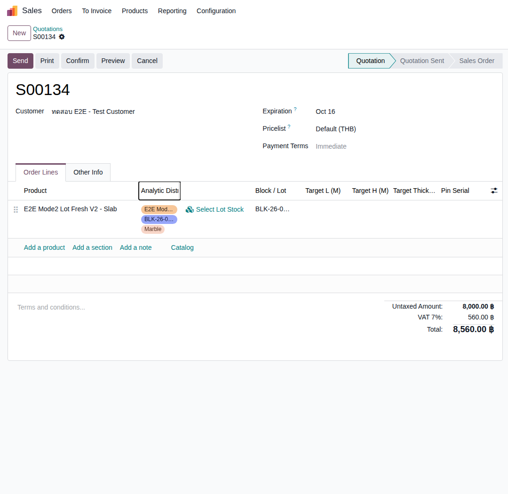 |
E3. จัดส่ง (Delivery — Scan Verification)
ADR-009 — ต้องสแกน/กรอก Serial ให้ตรงก่อน Validate เสมอ ใช้ร่วมกันทั้ง Serial และ Lot · 2 test cases
| TC ID | Scenario | Precondition | Steps | ข้อมูลตัวอย่าง | Expected Result | Priority | หน้าจอจริง |
|---|---|---|---|---|---|---|---|
| TC-E2E-M2-07 | พยายาม Validate ใบส่งของโดยยังไม่กรอก Scanned Serial ให้ตรง หมายเหตุ: กันส่งแผ่น/ล็อตผิดให้ลูกค้าโดยไม่ได้ตรวจสอบก่อน (ADR-009) — ใช้ตรรกะเดียวกันไม่ว่าเป็นบรรทัด Serial หรือ Lot ยืนยันแล้วทั้งคู่จริงในรอบนี้ |
ทำ TC-E2E-M2-03 หรือ TC-E2E-M2-06 เสร็จแล้ว มีใบส่งของสถานะ Ready รออยู่ |
|
- | ระบบฟ้อง error สองภาษาทันที: "สแกน Serial ไม่ตรง กรุณาสแกนให้ครบก่อน Validate" พร้อมระบุชื่อ Serial/Lot ที่ยังไม่ตรง บันทึกไม่ผ่าน | High | 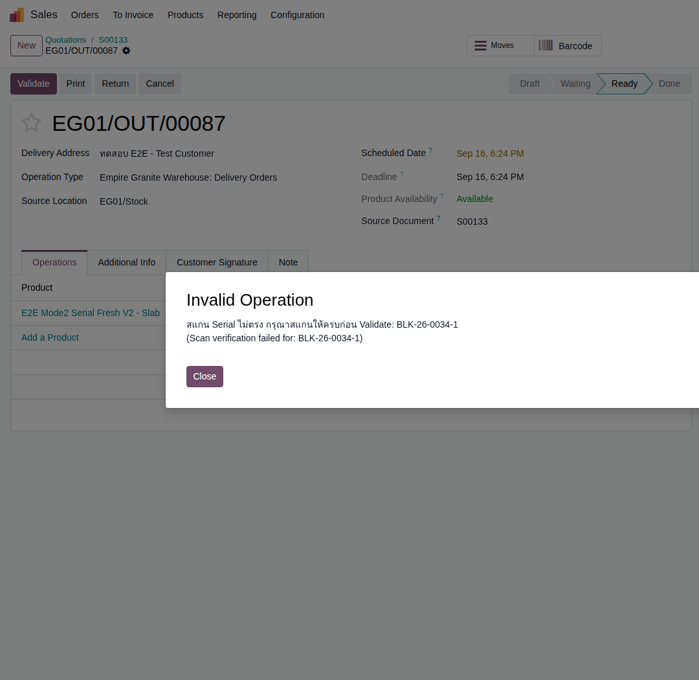 ภาพจากเส้นทาง Serial (EG01/OUT/00087) — เส้นทาง Lot เจอ error หน้าตาเดียวกัน (ดู EG01/OUT/00088) |
| TC-E2E-M2-08 | กรอก/สแกน Scanned Serial ให้ตรงครบทุกบรรทัดแล้ว Validate | ทำ TC-E2E-M2-07 เสร็จแล้ว (เจอ error มาก่อน) |
|
Scanned Serial (Serial path) = BLK-26-0034-1 Scanned Serial (Lot path) = BLK-26-0035-LOT |
ใบส่งของเปลี่ยนสถานะเป็น Done สำเร็จ — แผ่น/ปริมาณที่ขายหายจากสต็อกที่ขายได้ (Available) แล้ว | High | 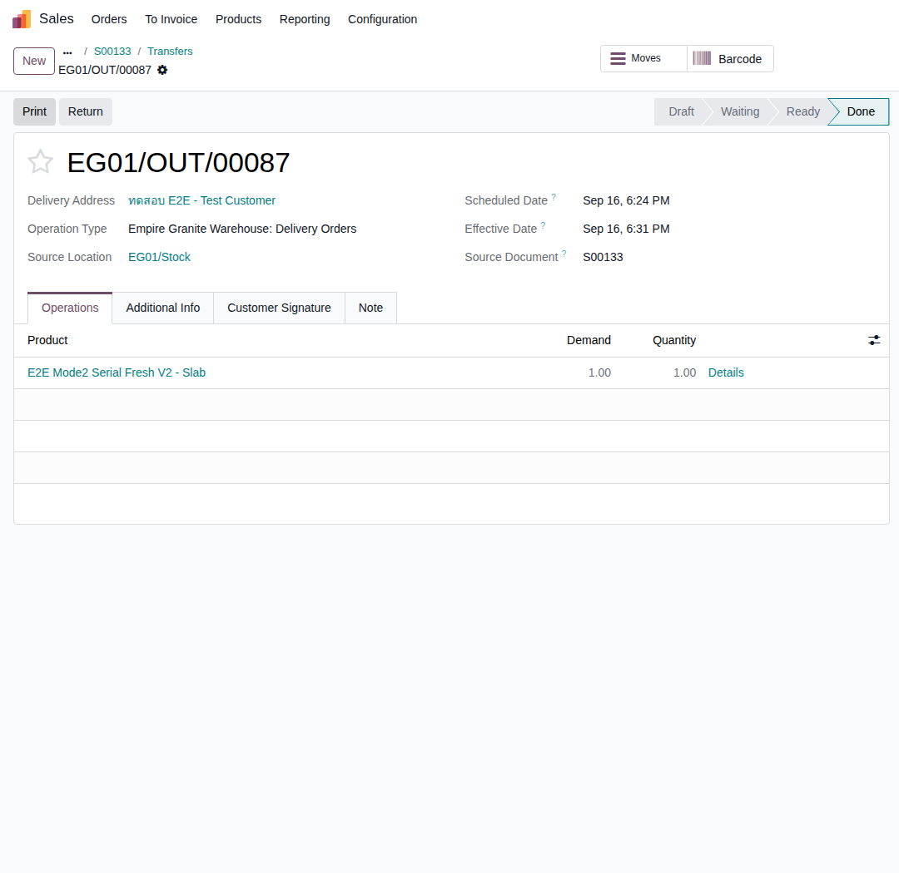 |
E4. บัญชี (Accounting + Payment)
ออกใบแจ้งหนี้ + รับชำระเงิน + ตรวจรายการบัญชี · 5 test cases
| TC ID | Scenario | Precondition | Steps | ข้อมูลตัวอย่าง | Expected Result | Priority | หน้าจอจริง |
|---|---|---|---|---|---|---|---|
| TC-E2E-M2-09 | สร้างและยืนยันใบแจ้งหนี้ลูกค้า (Customer Invoice) | ทำ TC-E2E-M2-08 เสร็จแล้ว |
|
- | ใบแจ้งหนี้สถานะ Posted ยอดรวมตรงกับ SO รวม VAT — ตัวอย่างจริง Lot: INV/2026/00036 (8,560.00) | High | 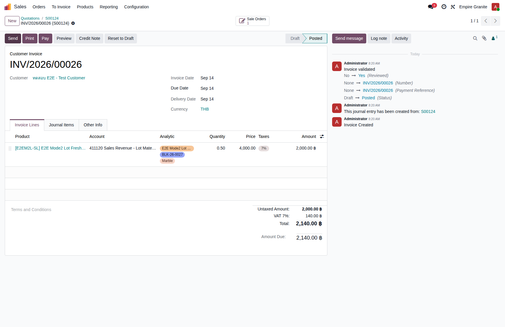 |
| TC-E2E-M2-10 | รับชำระเงิน (Register Payment) บนใบแจ้งหนี้ | ทำ TC-E2E-M2-09 เสร็จแล้ว (Invoice = Posted) |
|
- | ใบแจ้งหนี้ขึ้นสถานะ "In Payment" — ตัวอย่างจริงทั้งคู่ (INV/2026/00035, INV/2026/00036) จบที่สถานะ Posted + In Payment | Medium | 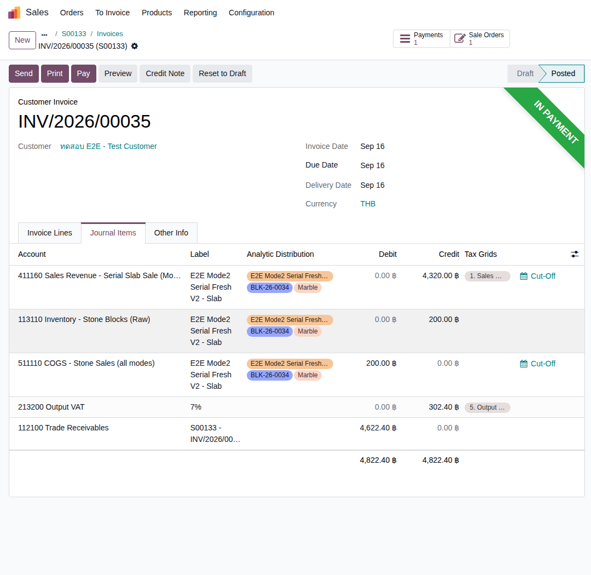 |
| TC-E2E-M2-11 | ตรวจรายการบัญชีบนใบแจ้งหนี้ (รายได้ + VAT + ลูกหนี้ + บัญชี) | ทำ TC-E2E-M2-09 เสร็จแล้ว |
|
- | บรรทัดรายได้ต้องขึ้นบัญชีถูกโหมด — Serial = "411160 Sales Revenue - Serial Slab Sale (Mode 2)", Lot = "411120 Sales Revenue - Lot Material (Mode 2)" — พร้อม Analytic Distribution ครบ ตรงกับใน SO | High | 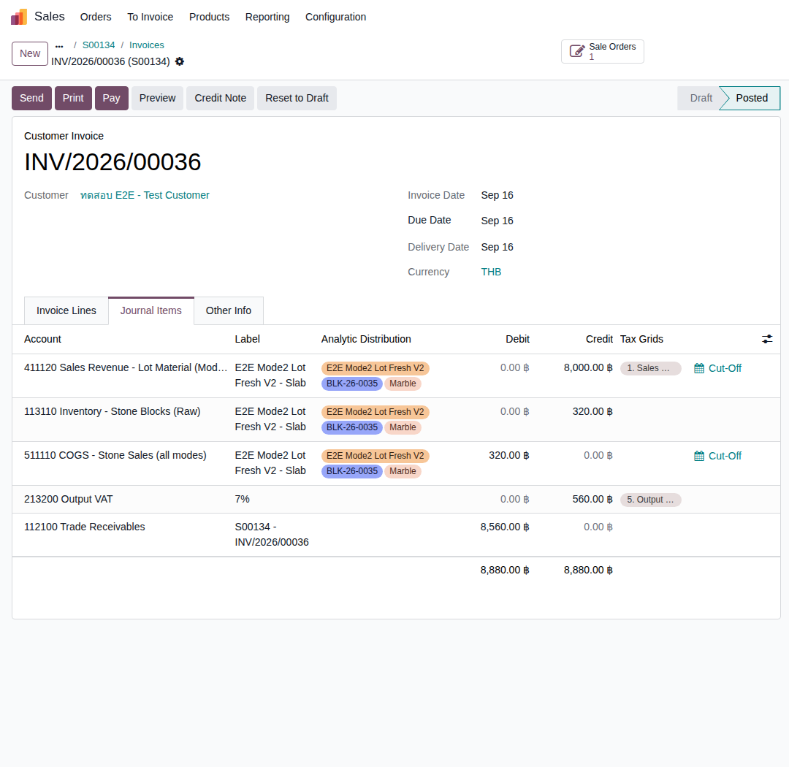 ภาพตัวอย่าง Lot (INV/2026/00036) — ตัวอย่าง Serial (INV/2026/00035) ดูได้จาก TC-E2E-M2-12 |
| TC-E2E-M2-12 | ตรวจว่า Serial-mode ลงบัญชีต้นทุนขาย (COGS) ถูกต้องหรือไม่ | ทำ TC-E2E-M2-08 เสร็จแล้ว (Delivery = Done), ใช้ Invoice ฝั่ง Serial (INV/2026/00035) |
|
- | เห็นคู่ COGS/Inventory แนบอัตโนมัติบนใบแจ้งหนี้ใบเดียวกัน (เดบิต "511110 COGS - Stone Sales (all modes)" / เครดิต "113110 Inventory - Stone Blocks (Raw)") พร้อม Analytic Distribution ตรงกับบรรทัดรายได้ — ตัวอย่างจริง INV/2026/00035: COGS/Inventory คู่ละ 200.00 (ยอดรวมสมดุล 4,822.40 = 4,822.40) | High | 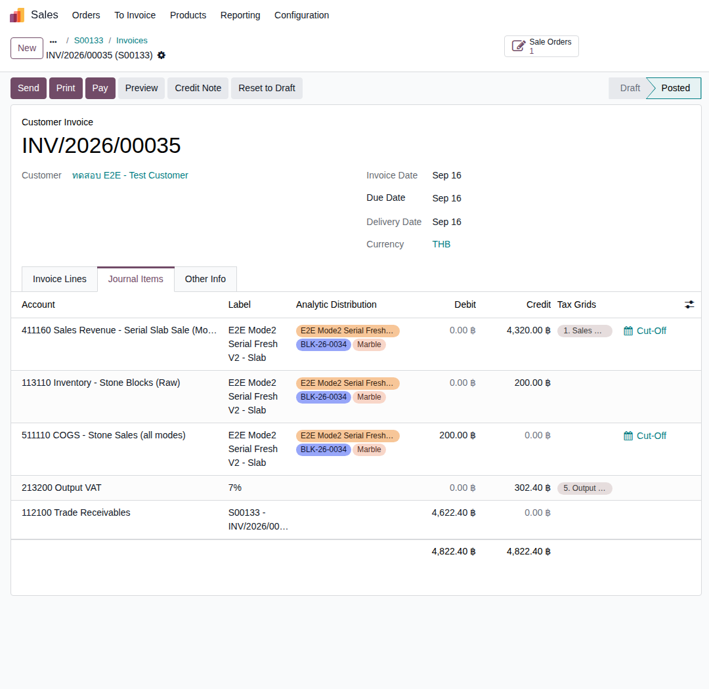 |
| TC-E2E-M2-12b | ตรวจ Lot-mode COGS ลงบัญชีถูกต้องหรือไม่ ✅ เดิมเป็น known issue เปิดอยู่ (Lot-mode COGS ขึ้น 0 บาทเสมอ, v1/v2) — ปิดแล้วจริง ยืนยันซ้ำอีกครั้งด้วยการรันจริงรอบนี้ (2026-09-16) COGS ขึ้นถูกต้องไม่ใช่ 0 |
ทำ TC-E2E-M2-08 เสร็จแล้ว (Delivery = Done), ใช้ Invoice ฝั่ง Lot (INV/2026/00036) |
|
- | เห็นคู่ COGS/Inventory แนบอัตโนมัติเหมือนฝั่ง Serial — ตัวอย่างจริง INV/2026/00036: COGS/Inventory คู่ละ 320.00 (ยอดรวมสมดุล 8,880.00 = 8,880.00) ไม่ใช่ 0 บาทอีกต่อไป | Medium |
E5. ตัดใหม่ (Cut Order — สร้าง Slab ใหม่จาก Block เมื่อยังไม่มีสต็อก)
ADR-061/066 — Factory สร้าง Manufacturing Order ตัด Block เองโดยตรงในแอป Manufacturing ไม่มี wizard อัตโนมัติจากบรรทัด SO แล้ว · 11 test cases
| TC ID | Scenario | Precondition | Steps | ข้อมูลตัวอย่าง | Expected Result | Priority | หน้าจอจริง |
|---|---|---|---|---|---|---|---|
| TC-E2E-M2-13 | เพิ่มบรรทัดสินค้าใน SO ทั้งที่ยังไม่มีแผ่นพร้อมขาย | ยังไม่มีแผ่นหินสถานะ Available ของ Material นี้เลย มีแต่ Block พร้อมอยู่ในสต็อก (ผ่านการซื้อ PO แบบเดียวกับ Mode 1) |
|
ลูกค้า = "ทดสอบ E2E - Test Customer" สินค้า = E2E Mode2 Serial Fresh - Slab |
เพิ่มบรรทัดสำเร็จ ปุ่ม "Select Slabs" ปรากฏเหมือนปกติ แต่ตอนนี้ยังไม่มีแผ่นให้เลือกเลย (0 Available) — ราคาที่ขึ้นเป็นแค่ List Price เริ่มต้น ต้องให้ Factory ตัดสต็อกใหม่ก่อนถึงจะขายได้จริง | Medium | 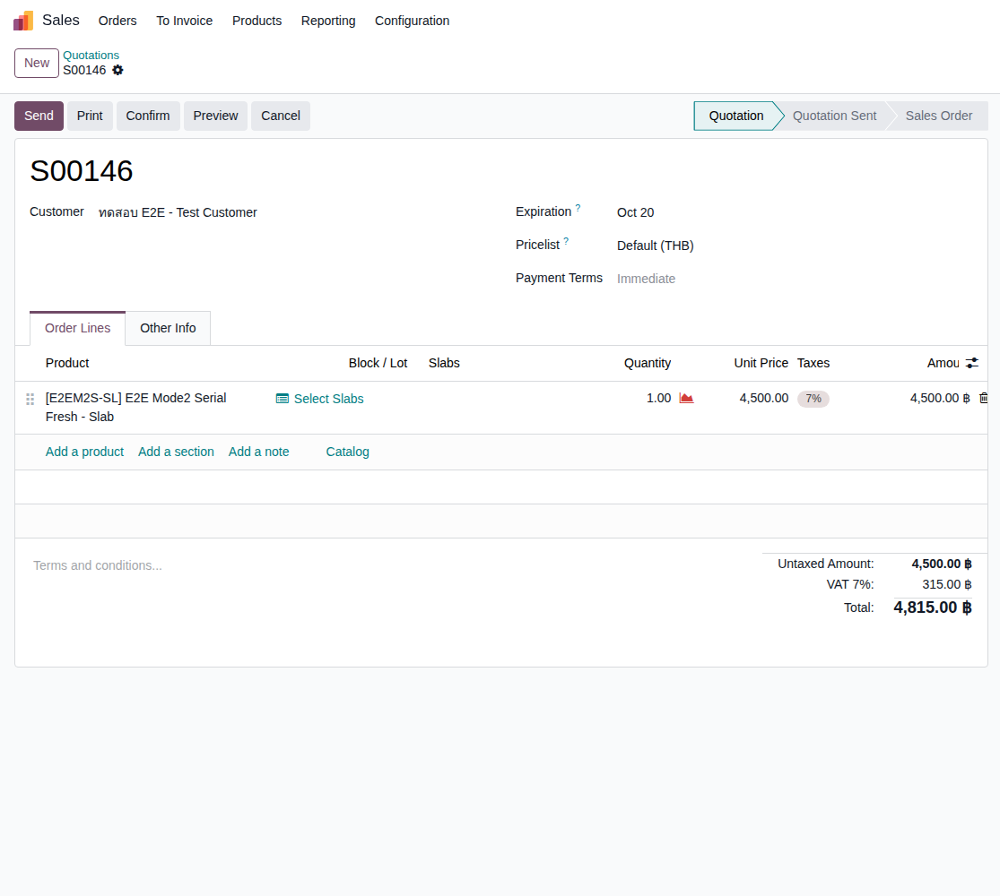 |
| TC-E2E-M2-14 | Factory สร้าง Manufacturing Order ตัด Block ใหม่ (ขั้นตอนที่ 1-3) ✨ ฟีเจอร์ใหม่ session นี้ — Manufacturing Order เดิมไม่มีทางผูกกลับมาที่ SO ให้เห็นได้เลย (ปุ่ม MO มาตรฐานของ Odoo นับไม่ได้เพราะ Cut Order นี้ไม่ได้ผ่านกลไก Procurement) จึงเพิ่มปุ่ม "Cut Orders" ใหม่ไว้บน SO (ดู TC-E2E-M2-18) |
ทำ TC-E2E-M2-13 เสร็จแล้ว (มี SO บรรทัดรออยู่), มี Block พร้อมอยู่ในสต็อก |
|
Stone Block = BLK-26-0037 Target Slab L (M) = 1.20, Target Slab H (M) = 0.80 For Sale Order Line = S00146 |
ระบบคำนวณจำนวนแผ่นที่จะผลิตอัตโนมัติจาก CBM ที่เหลือของ Block หารด้วยขนาดแผ่นที่ตั้ง (ตัวอย่างจริง: Block เหลือ 0.10 m³ ÷ (1.20×0.80×0.02) = 5 แผ่นพอดี) พร้อมสร้างบรรทัด Planned Slabs ให้ครบอัตโนมัติ — ถ้าต้องการตัดน้อยกว่าที่ระบบคำนวณ ลบบรรทัดส่วนเกินออกได้เองก่อน Confirm | High | 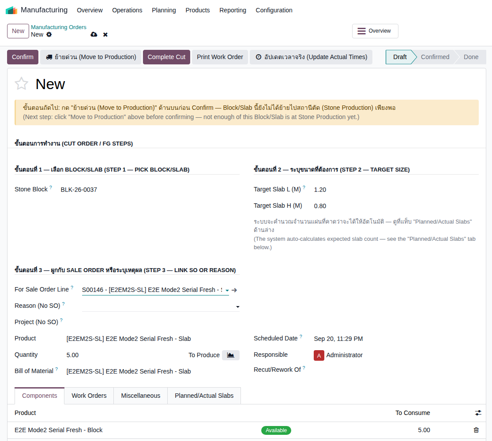 |
| TC-E2E-M2-15 | ย้าย Block เข้าสถานีตัด (Move to Production) แล้ว Confirm MO | ทำ TC-E2E-M2-14 เสร็จแล้ว — ระบบเตือนว่า Block ยังไม่ได้อยู่ที่สถานีตัด (Stone Production) เพียงพอ |
|
- | แถบเตือนสีเหลืองเปลี่ยนเป็นข้อความสีเขียว "พร้อม Confirm แล้ว" หลังย้ายสำเร็จ — กด Confirm ผ่านทันที ไม่ต้องออกไปทำ Internal Transfer เองใน Inventory | High | 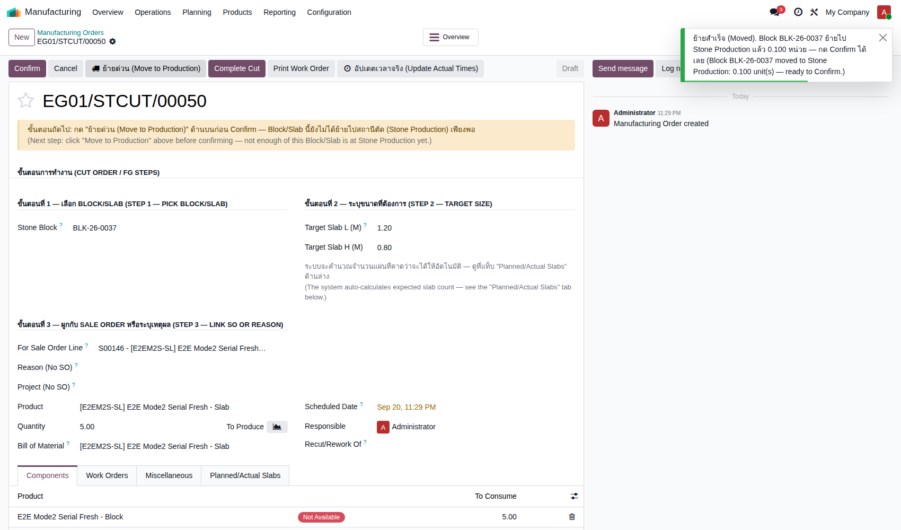 |
| TC-E2E-M2-16 | ตัดจริงในแท็บ Work Orders แล้วกด Complete Cut | ทำ TC-E2E-M2-15 เสร็จแล้ว (MO สถานะ Confirmed) |
|
- | MO เปลี่ยนสถานะเป็น Done ทันที — ระบบสร้าง Slab ใหม่ครบตามแผนพร้อม Serial Number ให้อัตโนมัติในตัว (ตัวอย่างจริง: 5 แผ่น, Serial Numbers 5) | High | 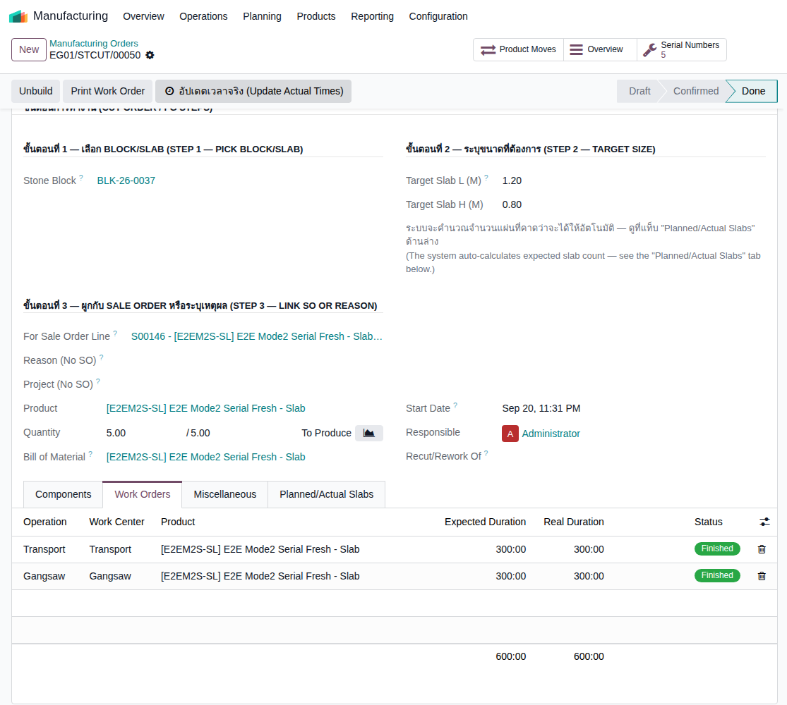 |
| TC-E2E-M2-17 | กลับไปที่ SO เดิม เลือกแผ่นที่เพิ่งตัดได้ | ทำ TC-E2E-M2-16 เสร็จแล้ว |
|
- | หน้าต่าง Select Slabs เตรียมแผ่นที่เพิ่งตัดได้มาให้อัตโนมัติแล้ว (สถานะ Hold ผูกกับบรรทัดนี้โดยตรง เพราะ MO ระบุ "For Sale Order Line" ไว้ตั้งแต่ต้น) ไม่ต้องกด Add a line เลือกเองซ้ำ — กด "Confirm Selection" ได้ทันที | High | 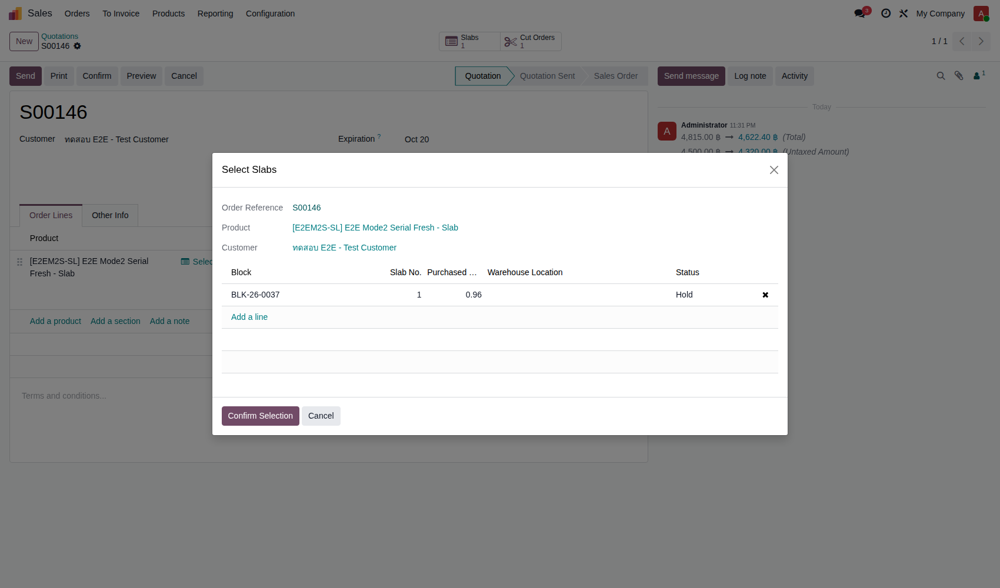 |
| TC-E2E-M2-18 | ยืนยัน (Confirm) Sale Order — เช็คปุ่ม Cut Orders ปรากฏ | ทำ TC-E2E-M2-17 เสร็จแล้ว |
|
- | SO เปลี่ยนสถานะเป็น Sales Order มี Delivery Order เกิดขึ้นอัตโนมัติ 1 ใบ — smart button ใหม่ "Cut Orders" ปรากฏที่มุมบน (นับ Manufacturing Order ที่ตัดมาเพื่อ SO นี้โดยเฉพาะ แยกจาก "Slabs") กดเข้าไปเปิด MO ที่ตัดให้ตรงตัวได้เลย — ตัวอย่างจริง: S00146 → EG01/OUT/00093, Total 4,622.40 | High | 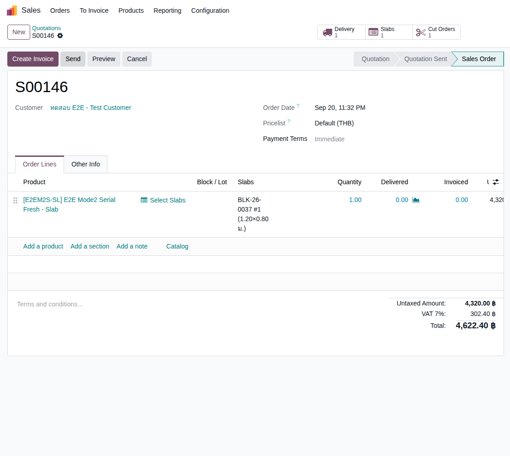 |
| TC-E2E-M2-19 | พยายาม Validate ใบส่งของโดยยังไม่สแกน Serial ให้ตรง หมายเหตุ: กันส่งแผ่นผิดให้ลูกค้าโดยไม่ได้ตรวจสอบก่อน (ADR-009) — ใช้ตรรกะเดียวกับ Mode 2 ปกติ (TC-E2E-M2-07) ไม่ว่าแผ่นนั้นจะมาจากสต็อกเดิมหรือตัดใหม่ |
ทำ TC-E2E-M2-18 เสร็จแล้ว มีใบส่งของสถานะ Ready รออยู่ |
|
- | ระบบฟ้อง error สองภาษาทันทีเหมือน Mode 2 ปกติ: "สแกน Serial ไม่ตรง กรุณาสแกนให้ครบก่อน Validate" พร้อมระบุชื่อแผ่นที่ยังไม่ตรง (ตัวอย่างจริง: BLK-26-0037-1) บันทึกไม่ผ่าน | Medium | 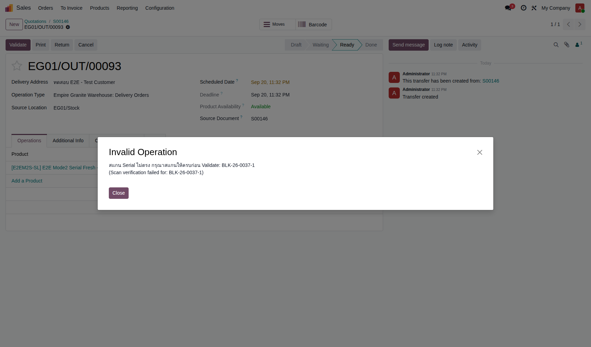 |
| TC-E2E-M2-20 | กรอก/สแกน Scanned Serial ให้ตรงแล้ว Validate | ทำ TC-E2E-M2-19 เสร็จแล้ว (เจอ error มาก่อน) |
|
Scanned Serial = BLK-26-0037-1 | ใบส่งของเปลี่ยนสถานะเป็น Done สำเร็จ — แผ่นที่ขายหายจากสต็อกที่ขายได้ (Available) แล้ว | Medium | 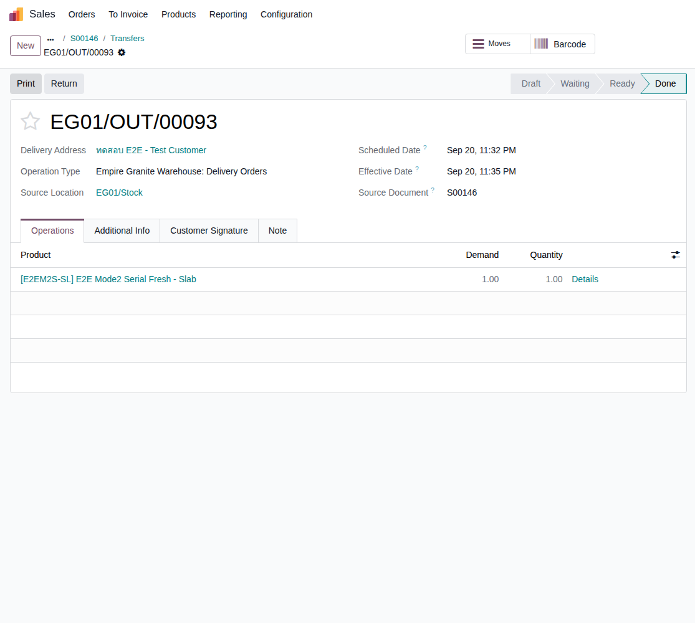 |
| TC-E2E-M2-21 | สร้างและยืนยันใบแจ้งหนี้ — เช็คบัญชีรายได้ที่ใช้ ℹ️ พฤติกรรมที่ตั้งใจไว้ ไม่ใช่บั๊ก — ระบบแยกบัญชีรายได้ตามว่า "แผ่นนี้ถูกตัดมาเพื่อออเดอร์นี้โดยเฉพาะ" (บัญชีนี้) หรือ "หยิบจากสต็อกที่ตัดไว้ก่อนแล้ว" (บัญชี Serial Slab Sale ปกติ ดู TC-E2E-M2-11) — ชื่อบัญชียังใช้คำว่า "Mode 3" หลงเหลือจากก่อนรวม Mode เข้ากับจุดขาย 2 ไม่กระทบความถูกต้องทางบัญชี เป็นแค่ชื่อที่อาจทำให้สับสนถ้าไม่รู้ที่มา — ควรพิจารณาเปลี่ยนชื่อบัญชีให้สื่อสารตรงกับจุดขาย 2 ในรอบถัดไป |
ทำ TC-E2E-M2-20 เสร็จแล้ว |
|
- | ใบแจ้งหนี้สถานะ Posted ยอดรวมตรงกับ SO รวม VAT — ตัวอย่างจริง INV/2026/00039 (4,622.40) แต่บัญชีรายได้ที่ขึ้นคือ "Sales Revenue - Cut-to-Order (Mode 3)" ไม่ใช่ "Serial Slab Sale (Mode 2)" เหมือนบรรทัดที่ขายจากสต็อกที่มีอยู่แล้ว (ดูหมายเหตุ) | High | 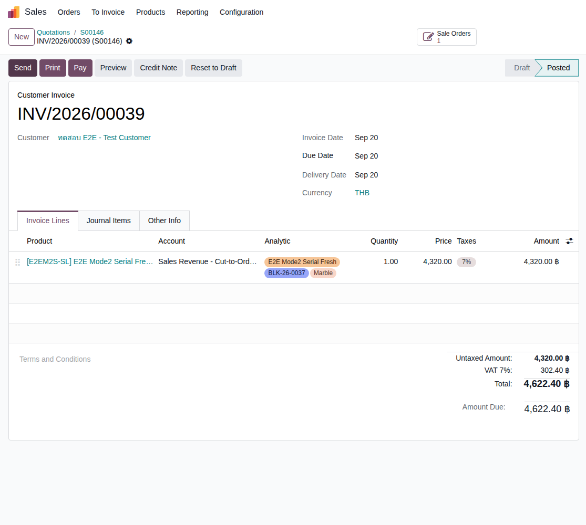 |
| TC-E2E-M2-22 | ตรวจรายการบัญชี COGS/Inventory บนใบแจ้งหนี้ | ทำ TC-E2E-M2-21 เสร็จแล้ว |
|
- | เห็นคู่ COGS/Inventory แนบอัตโนมัติเหมือน Mode 2 ปกติ พร้อม Analytic Distribution ครบ — ตัวอย่างจริง INV/2026/00039: เดบิต "511110 COGS - Stone Sales (all modes)" / เครดิต "113110 Inventory - Stone Blocks (Raw)" คู่ละ 300.00 ยอดรวมสมดุล 4,922.40 = 4,922.40 | High | 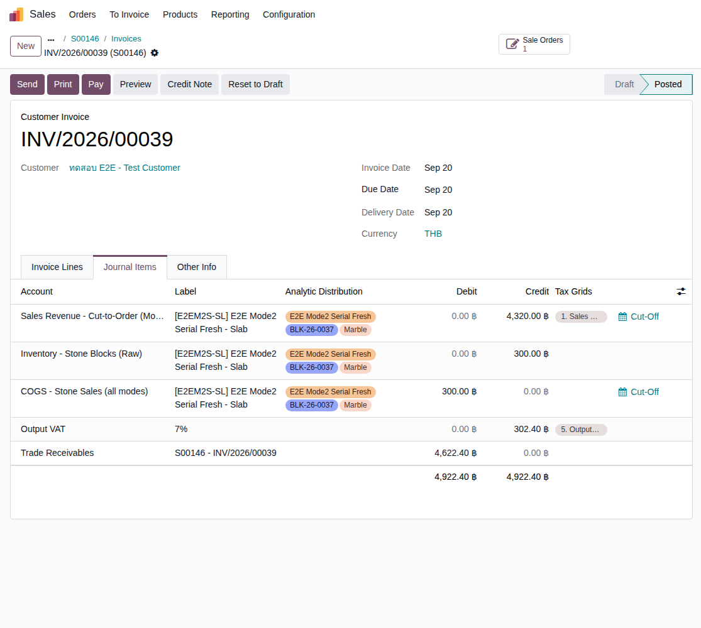 |
| TC-E2E-M2-23 | รับชำระเงิน (Register Payment) | ทำ TC-E2E-M2-21 เสร็จแล้ว (Invoice = Posted) |
|
- | ใบแจ้งหนี้ขึ้นสถานะ "In Payment" — จบเส้นทาง "ตัดใหม่" ทั้งหมดตั้งแต่ยังไม่มีสต็อกจนถึงรับเงินสำเร็จ (ตัวอย่างจริง: INV/2026/00039) | Medium | 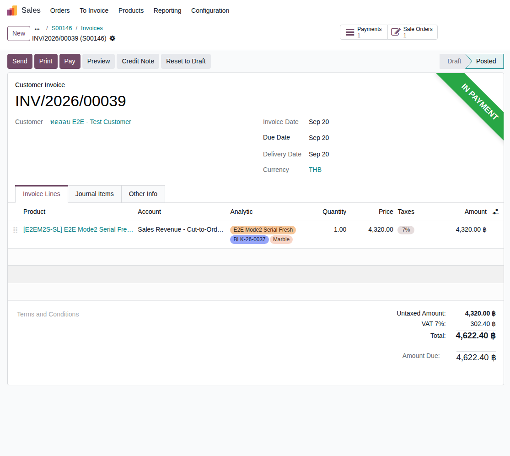 |